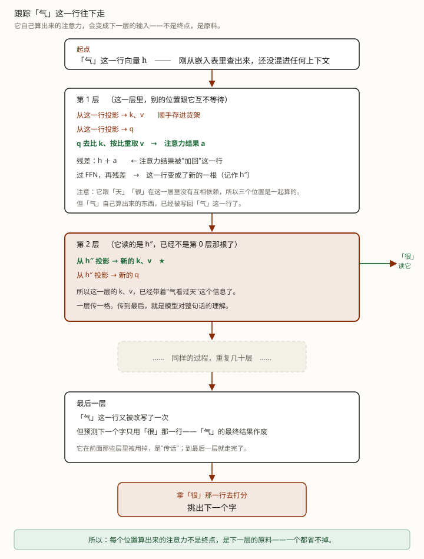

初学版讲「是什么」，这篇答「里面具体在转什么」。按需跳读——多条都能从初学版的括号直达。
只收读完初学版仍会冒出来的疑问。初学版已经讲清楚的（"一段算力、一段带宽""货架越写越厚"），这里不再重复。
这篇的所有问题，都挂在下面这条链的某一环上——先看链，再挑你卡的那一环。
以你输入「你是谁」、模型回「我是…」为例。这次请求分两段跑：先 prefill 一次，再 decode 反复。下面两栏只写该段独有的步骤，两段共用的一圈放在最下面那个框里——同一段文字不用抄两遍。
prefill · 第 1 轮 跑一次
↓ 送 n 行进下面那一圈 一次要算一大堆 → 卡算力
decode · 第 2 轮起 一直反复到结束
↻ 上面两栏都往下送，送进这一圈；这一圈每跑完一次，产出一个编号——prefill 跑的那一次，产出的就是 decode 的第一个输入；之后每一圈产出的编号都回到右边那一栏，查表得到 1 根向量，再往下送回来跑下一圈，直到吐出结束符。
decode 卡在"搬"这件事，很容易被读成"先搬完，再开算"——不是的：搬和算在同一个前向里交替、流水线式发生。
假设正在生成第 t 个字，走进第 l 层：
l 层货架里所有历史的 K/V 读出来；l 层货架的末尾；走到最后一步：新字这一行被 FFN 改写成新的一根向量，交给下一层——而第 3 步手里那张表，当场就用不上了。下一层会拿着这 1 行算出一张新的表来顶替它。
所以不是"prefill 跑完才丢"，而是每过完一层就丢一层。整条流水线跑完一圈，能留下来的只有两样：每层的 k、v（写进货架），和最后一层、最后一行的那个向量（拿去打分）——从头到尾不存在一张"存着所有历史向量"的表（那根向量正式叫 hidden 向量，为什么它不缓存、见第 1 课进阶附录）。（prefill 阶段完全同理：n 行那张表一路往下传，每传完一层就作废，最后只剩"货架"和"最后一行的向量"。）
把上面七步按量排一下，就看出问题在哪了：
| 动作 | 每步的量 | 说明 |
|---|---|---|
| 读模型权重 | 很大 | 每吐一个字都要重来一遍 |
| 读历史 K/V | 大，序列越长越大 | 这半截随上下文变长 |
| 写新的 K/V | 很小 | 只有这 1 个字的量，可以忽略 |
所以：带宽压力全在"读"，不在"写"。顺序上还有一个容易搞反的点——
是先把当前的 k/v 算出来、写进货架，再拿当前的 q 去比；而不是"先比完再写"。
所以当前这个字也会看上自己一眼——因果掩码的规矩是"能看自己和它之前的所有位置"（原始论文的措辞：attend to all positions in the decoder up to and including that position）。
另外，GPU 会尽量让"搬"和"算"重叠——搬下一批数据的时候，计算单元正在算上一批。但 decode 的问题是搬的活实在太多，重叠也填不满，所以整体瓶颈仍然是搬。
"prefill 卡算力、decode 卡带宽"——这句结论是能算出来的，不是随口说的。
用一个词量这件事：算术强度（arithmetic intensity） ＝ 干了多少次运算 ÷ 搬了多少字节。翻译成人话就是：每搬一个字的数据，能榨出多少计算。
设 d 是向量长度、L 是一次处理多少个 token：
| 阶段 | 计算量约 | 要搬的约 | 算术强度约 |
|---|---|---|---|
Prefill（一次 L 个） |
L × d² |
d²（权重） |
L |
| Decode（一次 1 个） | d² |
d²（权重）＋ K/V |
1 |
关键在权重那份是共享的。DistServe 论文（附录 A.2/A.3）把这一步写成四个矩阵乘法（GEMM），形状是这样的：M=(t,h)、N=(h,·)（t 就是这一趟有几个 token，h 是向量长度）。权重 N 那一半不随 t 变——不管 t 是 2 万还是 1，权重都是同一张、都要整张读一遍；变的是 M 那一半，它就是喂进来的行数。
论文给这两个阶段的算术强度（AI ＝ 运算次数 ÷ 搬运字节数）就是 O(t) 对 O(B)（B 是 batch size）：prefill 的 AI 随 token 数线性涨，t 到几百时在 A100 上超过 156 的阈值，确定是算力受限；decode 把 t 换成 B（常常就是 1），AI 掉回常数级，论文原话是"这四个运算全是 memory-bound"。
论文给的延迟公式里能直接看到这件事——T_prefill = C₁(4th²+2thm) + C₂·3ht²/b，T_decode = C₄(4h²+2hm) + C₅·3ht：权重那半截（4h²+2hm）两边一模一样，差的全在后面那几项——2 万行要算 2 万行那么多乘法，1 行就只算 1 行。搬的量级是同一量级，算的量差 2 万倍。这就是基础课那句"卡的不是算，是搬"的公式依据。
结论只看两句：
而一块 GPU 的"算力 ÷ 带宽"这个比值，通常有上百到几百。decode 的强度跟它差得非常远——意思是：它拿到的数据，根本喂不饱计算单元，绝大部分时间在等。
这就是"卡在带宽"的严格含义。
Weka 那篇里写着 decode 的算术强度实测是 60–80，跟上面这个"1"差得挺远。不矛盾，是两把尺子：上面那个只算"一次矩阵乘"最理想的情况，算出来是个下限；60–80 是整个模型跑一步的实测平均，中间的损耗全算进去了。
你只要带走一句：不管用哪个数，跟显卡的"算力 ÷ 带宽"（上百到几百）比，都还差着一个数量级上下——所以结论永远是那句"喂不饱计算单元"。
（顺带：L 越大，prefill 的算术强度越高。所以输入越长，prefill 越"划算"——一次搬权重，能算一大片。prefill 还有一笔 n×n 的算力账——那张"比较表"怎么一次算出来、掩码又白算了哪一半，见 Q5 的公式块。）
一词两义的坑：论文里 FFN 也常被形容成一张"键值记忆"表，但那和缓存里那份 K/V 不是一回事。（FFN 为什么不进缓存——它逐位置处理、不回头读历史，没有"被后面反复读"的产出，理由见 Q1；它到底在改什么，见 第 1 课进阶 Q7。）
要小心的正是这个词——FFN 那张"键值记忆"，是另一个意思的"键值"：
| 注意力的 K/V | FFN 的"键值记忆" | |
|---|---|---|
| 谁产生的 | 注意力那一步算出来 | FFN 的两层权重 |
| 「键」是什么 | 每个 token 的"我是谁" | 训练里学到的文本模式 |
| 「值」是什么 | 每个 token 的"我带了什么" | 输出词表上的一个分布 |
| 干什么用 | 决定"看谁、取什么" | 决定"该补充哪个概念" |
| 会缓存吗 | 会 | 不会，也没意义 |
| 性质 | 机制 | 比喻（解释它"像"查表） |
来源是 Geva et al.（EMNLP 2021），论文标题就叫《Transformer Feed-Forward Layers Are Key-Value Memories》：
FFN 层像键值记忆：每个键对应训练语料里的文本模式，每个值对应输出词表上的一个分布。
论文给的原例：前文是 Eiffel Tower is located in 时，某一条"记忆"被触发，把 「Paris」 的分往上推。
那是"解释它怎么工作"的比喻，跟缓存一点关系都没有——它每用一次都要重新查，没有"存起来下次再用"这回事。
命中缓存之后，"计算"这个词其实指两件贵贱差着好几个数量级的事。先把它们分开：
它们都常被叫"处理"：tokenize（把新文字切成 token 编号）很轻，常在 CPU 上就顺手做了；前向传播（编号 → 查嵌入 → 逐层算 → 打分 → 挑出一个字）才是真正的"计算"。
所以命中缓存不等于"新增部分 tokenize 一下就完了"。真实流程是：
新增文字 → tokenize → 查嵌入
→ 逐层前向（每层算出新增 token 的 K/V，追加进货架）
→ 用最后一个位置的输出来预测第一个回复字
→ 之后进入正常 decode 循环新增部分可能有好几个 token，而且都是已知的输入（不是模型一个个挑出来的），所以可以并行算——这本质上就是一次小型 prefill。
术语：这叫 增量 prefill（incremental prefill），也叫部分 prefill。
判断标准不是"从第 1 个 token 开始算"，而是：对一段"已知输入"做并行前向、算出每层 K/V 填进缓存，最后拿最后一个位置预测下一个字。
新增提问恰好全符合——所以它算 prefill，不叫 decode：
| 这一段 | 算不算 | 叫什么 |
|---|---|---|
| 整个 prompt，从头 | 要算 | 全量 prefill |
| 命中的老前缀 | 不算，复用 | —— |
| 新增的那一段 | 要算（可并行） | 增量 prefill |
| 之后每吐一个字 | 要算（只能串行） | decode |
最后把口径收全——多轮对话、agent 跑起来，prefill 会反复发生吗？会。每来一条新的用户输入，就再来一次 prefill（通常就是上面这种增量的）；agent 一次任务发十几次请求，就是十几段「prefill + decode」循环（代价有多大，基础课动手那节有实测）。
每一条新的用户输入，都会开启一次新的「prefill + decode」循环；但在一次回复内部，prefill 只发生一次。
先分清一件容易混的事：注意力这一步，其实是两步，不是一步。
第一步：把整张表一次性投影出每个位置的 q、k、v（三个大矩阵乘）。
第二步：拿各自的 q 去比 k、按比重取 v——算出每个位置各自的注意力。
很多人以为这两步是一起做完的，于是产生一个矛盾："既然每个字都要看前面的字，那不就得分先后？"——不矛盾。因为第一步已经把全部位置的 k、v 一次性备齐了，轮到第二步时，各查各的，互不等待。
把两步的依赖摊开看：
| 动作 | 依赖谁 | 能不能并行 |
|---|---|---|
| ① 从整张表投影出 q、k、v | 只依赖各自的向量，跟别的位置无关 | 能，n 行一次算完 |
| ② 拿 q 比 k、取 v | 依赖前面所有位置的 k、v | 也能——那些 k、v 在 ① 里已经备齐 |
| ③ 挑出下一个 token | 依赖本轮所有位置的输出 | 挑完之后，才知道下一轮该算哪一行 |
所以 1 和 2 都不构成"排队"——它们全是"大矩阵乘"。
一张表看完「哪里并行、哪里串行」：
一层之内，n 个位置之间 → 没有依赖，一次算完
层与层之间 → 有（一层做完才做下一层），但每层内部仍是并行的
挑出下一个 token → 真串行：下一个还没被挑出来，就没法开始算它
（第 2 轮起"只补 1 个字"，不是"只能一个一个算"，而是下一个字还没被挑出来——整条流水线里唯一真正串行的就是这一步。）
第一步就是三次矩阵乘，X 是那张 n 行 × d 列的表，W 是学出来的权重：
Q = X · W_Q K = X · W_K V = X · W_V
（n × d）乘（d × d）得到（n × d）——n 行同时算完每输出行只依赖自己的输入行加共用的权重，不依赖别的输出行——这就是"能并行"的全部原因。像 Excel 公式往下拉。
第二步也是矩阵乘。Q、K 都是 n 行，把它们乘起来就是 n×n 的分数表：
S = Q · Kᵀ / √d_k ← n×n，每一格 = "第 i 行的 q 跟第 j 行的 k 有多像"
O = softmax(S) · V ← 按每一行的权重，把 V 加权取回来为什么能一次算完：第 (i, j) 那一格只吃一个 qi 和一个 kj，两样都是现成的 → 每格互不依赖，整张表一次填满。
顺带解释了一件事：因果掩码是在整张 n×n 表算完之后才把"不该看"的那半遮掉的——位置 1 跟位置 3 的相似度白算了，然后扔掉。所以即使有掩码，prefill 干的活仍是完整的 n² 那一份，掩码不影响"算了多少"，只影响"哪些分作废"。
也就是说，prefill 的算力其实有两笔账：这张 n×n 表算一笔，加上 Q2 算的那笔矩阵乘（L × d²）。输入越长，第一笔越占优——Q2 那个"算术强度随 token 数涨"的结论只覆盖了第二笔，两笔合起来才是 prefill 的总算力。
先摆出那个错想法——很自然，我第一次读也想过：
"第 1 轮不就是为了预测第一个字吗？前面那些字只要把 k、v 提供出来就行，它们自己不用回头看前面的字、不用算自己的注意力。"
答案是：不行，一个都省不掉。理由只有一条，但很关键：
每一层的 k、v，都是从上一层改写后那行数字里投影出来的。
所以位置 2 在第 1 层算出来的注意力结果，会变成它在第 2 层的输入。
换句话说：每个位置算出来的注意力不是终点，是下游每一层都要接着用的原料。你省掉它，后面每一层读到的东西就都变了。

脚本在工作区：exercises/llm/0002-why-all-positions.py。它用一个 4 层玩具模型，依次让某个字"不回头看前面"，再量最后一个位置偏了多少。
python exercises/llm/0002-why-all-positions.pyWindows 终端若中文乱码，先执行 chcp 65001。数字是手编的，只看关系、不看绝对值。
若「天」不回头看：最终向量最大差 0.0000，原始分最大差 0.0000 （它本来就没有「前面」可看）
若「气」不回头看：最终向量最大差 0.1533，原始分最大差 0.0553
（让「气」不回头看，每跑完一层就量一次最后一个位置的向量偏差）
跑完第 1 层 偏差 0.0000
跑完第 2 层 偏差 0.0482
跑完第 3 层 偏差 0.1002
跑完第 4 层 偏差 0.1533位置 2 在第 1 层明明变了，可最后一个位置一点没受影响。这不是"没影响"，而是影响还没传过来：
因为在第 1 层里，最后那个位置读的是位置 2 的 k、v——而那两个数是从第 0 层的嵌入投影出来的，还没混进位置 2 的注意力结果。位置 2 的注意力要到第 2 层才被读到。偏差正是从那一层开始冒出来的，然后一层层放大。
顺带一提，那行「天 → 0.0000」是个漂亮的反证：位置 1 本来就没有"前面"可看，所以它无论如何都不受影响。这说明影响不是凭空来的——是真真切切把它的注意力结果用掉了。
真正只算最后一行的，只有最后那步「打分」。前面每个位置也各自出了个预测，但推理时没人要——那才是真正被丢掉的部分。（第 1 课第 4 节收尾说的也是这件事。）
"算"这个词容易把权重也卷进来。其实：权重是参数，它是参与矩阵乘的那一方；真正"被算出来"的是激活值、Q/K/V、注意力结果、FFN 输出这些。
说"搬权重、算激活"比说"算权重"准确。
Q2 decode 每步的显存带宽压力，主要来自哪一半？
Q3 前缀命中缓存后，新增的那段文字还要不要走完整前向？
回初学版：LLM 底层 · 第 2 课 · 为什么「读长文」快、「写长文」慢？ · 回到总图
前置：第 1 课 · 从 token 到下一个 token（hidden 向量、Q/K/V、注意力）
顺着往下：第 3 课 · KV Cache 与「缓存命中」——本课 Q5 的"增量 prefill"，那一课会讲清它命中/不命中的条件。
Agent 侧：Agent 原理篇 · 第 3 课 · 把零件装起来（为什么一次任务会发十几次请求）。